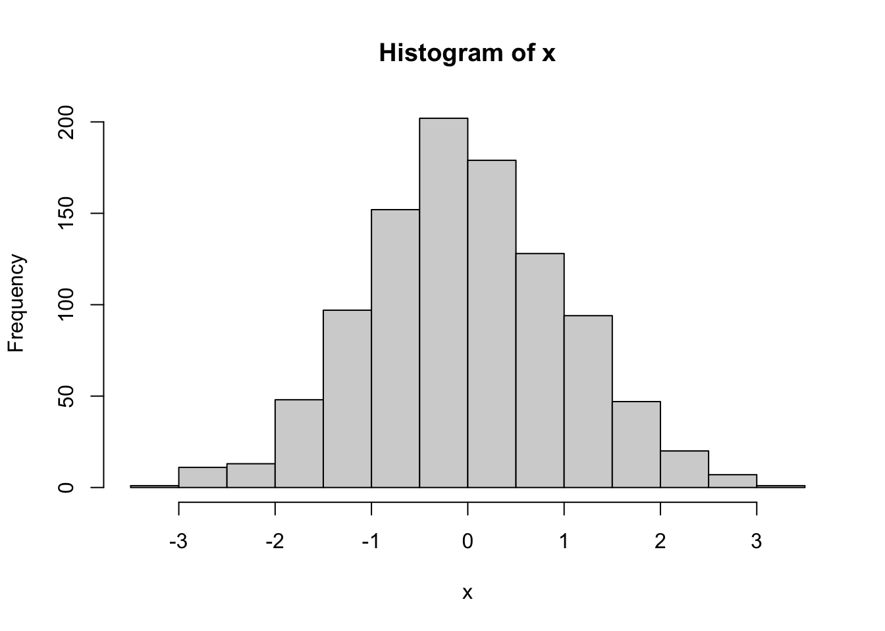
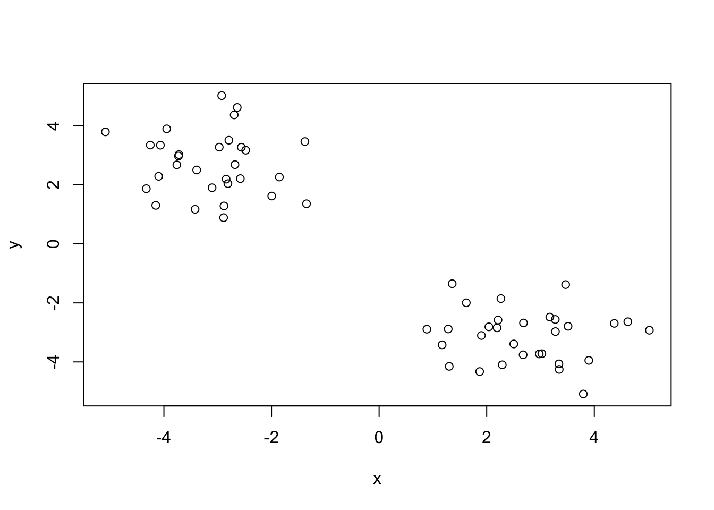
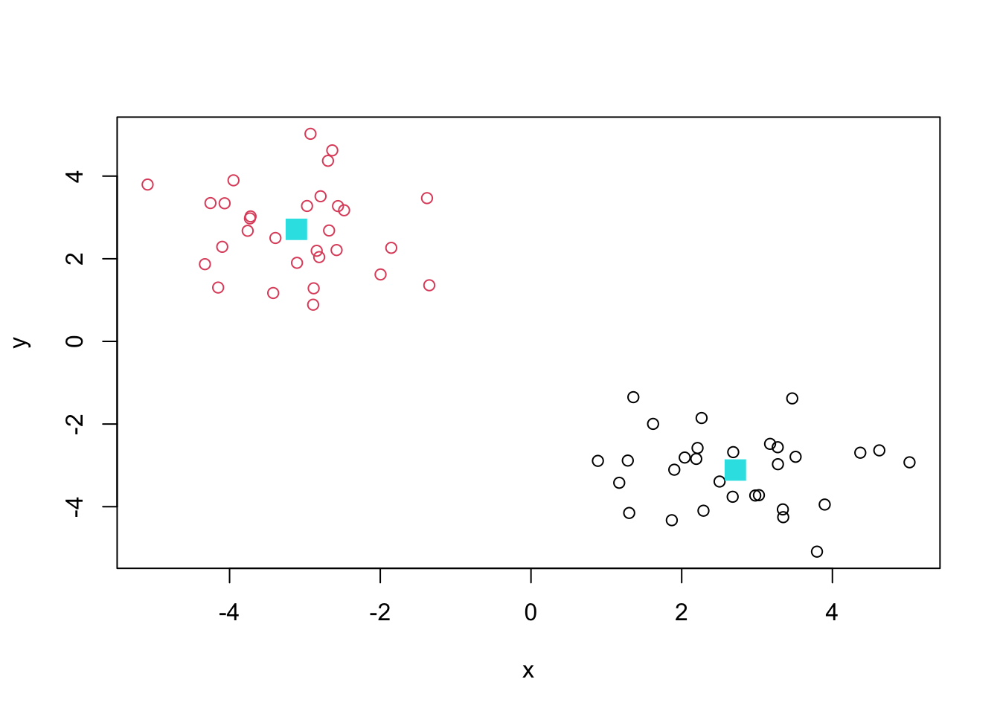
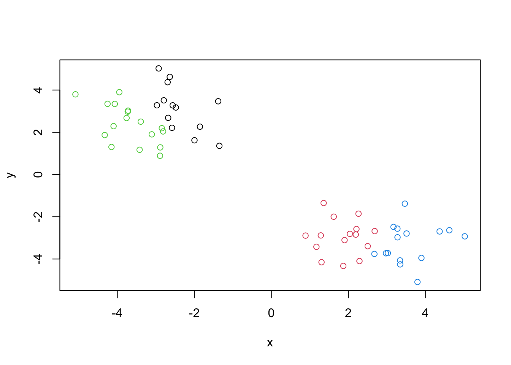

rnorm(5)[1] -0.8950584 0.6763262 1.1570828 0.7728352 -0.4881854The broad goal here is to find groupings (clusters) in your input data.
First, let’s make up some data to cluster.
We are going to use rnorm() in order to make up some numbers. For example:
rnorm(5)[1] -0.8950584 0.6763262 1.1570828 0.7728352 -0.4881854But, we are going to use 1,000 and turn it into a histogram!
x <- rnorm(1000)
hist(x)
Make a vector of length 60 with 30 points centered at -3 and 30 points centered at +3
tmp <- c(rnorm(30, mean=-3), rnorm(30, mean = 3))
tmp [1] -3.1050604 -2.5610853 -4.2536774 -2.8839221 -4.1515682 -1.8541768
[7] -4.0972109 -3.7296207 -2.8106035 -3.7212068 -4.3270098 -2.6939261
[13] -2.8435304 -1.3495865 -1.9961589 -1.3795680 -4.0658808 -2.4800049
[19] -2.9260696 -3.4210381 -2.9719291 -3.3912742 -2.7926255 -2.5796976
[25] -3.9480963 -3.7595917 -2.6794012 -2.6372473 -5.0875951 -2.8907749
[31] 0.8880554 3.7954350 4.6225363 2.6837805 2.6766254 3.8978722
[37] 2.2104098 3.5117477 2.5027190 3.2770338 1.1711250 5.0234401
[43] 3.1729911 3.3422241 3.4670315 1.6201520 1.3584058 2.1931005
[49] 4.3702743 1.8687805 3.0248404 2.0402062 2.9764045 2.2888747
[55] 2.2639765 1.3034154 1.2847318 3.3472644 3.2744124 1.9016782I will now make a small x and y dataset with 2 groups of points. Basically going to take the reverse of it! We are going to use the rev() function.
x <-cbind(x=tmp, y=rev(tmp))
x x y
[1,] -3.1050604 1.9016782
[2,] -2.5610853 3.2744124
[3,] -4.2536774 3.3472644
[4,] -2.8839221 1.2847318
[5,] -4.1515682 1.3034154
[6,] -1.8541768 2.2639765
[7,] -4.0972109 2.2888747
[8,] -3.7296207 2.9764045
[9,] -2.8106035 2.0402062
[10,] -3.7212068 3.0248404
[11,] -4.3270098 1.8687805
[12,] -2.6939261 4.3702743
[13,] -2.8435304 2.1931005
[14,] -1.3495865 1.3584058
[15,] -1.9961589 1.6201520
[16,] -1.3795680 3.4670315
[17,] -4.0658808 3.3422241
[18,] -2.4800049 3.1729911
[19,] -2.9260696 5.0234401
[20,] -3.4210381 1.1711250
[21,] -2.9719291 3.2770338
[22,] -3.3912742 2.5027190
[23,] -2.7926255 3.5117477
[24,] -2.5796976 2.2104098
[25,] -3.9480963 3.8978722
[26,] -3.7595917 2.6766254
[27,] -2.6794012 2.6837805
[28,] -2.6372473 4.6225363
[29,] -5.0875951 3.7954350
[30,] -2.8907749 0.8880554
[31,] 0.8880554 -2.8907749
[32,] 3.7954350 -5.0875951
[33,] 4.6225363 -2.6372473
[34,] 2.6837805 -2.6794012
[35,] 2.6766254 -3.7595917
[36,] 3.8978722 -3.9480963
[37,] 2.2104098 -2.5796976
[38,] 3.5117477 -2.7926255
[39,] 2.5027190 -3.3912742
[40,] 3.2770338 -2.9719291
[41,] 1.1711250 -3.4210381
[42,] 5.0234401 -2.9260696
[43,] 3.1729911 -2.4800049
[44,] 3.3422241 -4.0658808
[45,] 3.4670315 -1.3795680
[46,] 1.6201520 -1.9961589
[47,] 1.3584058 -1.3495865
[48,] 2.1931005 -2.8435304
[49,] 4.3702743 -2.6939261
[50,] 1.8687805 -4.3270098
[51,] 3.0248404 -3.7212068
[52,] 2.0402062 -2.8106035
[53,] 2.9764045 -3.7296207
[54,] 2.2888747 -4.0972109
[55,] 2.2639765 -1.8541768
[56,] 1.3034154 -4.1515682
[57,] 1.2847318 -2.8839221
[58,] 3.3472644 -4.2536774
[59,] 3.2744124 -2.5610853
[60,] 1.9016782 -3.1050604plot(x)
We are going to run kmeans()
k <- kmeans(x, centers = 2)
kK-means clustering with 2 clusters of sizes 30, 30
Cluster means:
x y
1 2.711985 -3.112971
2 -3.112971 2.711985
Clustering vector:
[1] 2 2 2 2 2 2 2 2 2 2 2 2 2 2 2 2 2 2 2 2 2 2 2 2 2 2 2 2 2 2 1 1 1 1 1 1 1 1
[39] 1 1 1 1 1 1 1 1 1 1 1 1 1 1 1 1 1 1 1 1 1 1
Within cluster sum of squares by cluster:
[1] 55.47792 55.47792
(between_SS / total_SS = 90.2 %)
Available components:
[1] "cluster" "centers" "totss" "withinss" "tot.withinss"
[6] "betweenss" "size" "iter" "ifault" Q. From your result object k how many points are in each cluster?
k$size[1] 30 30Q. What “component” of your results object details the cluster membership?
k$cluster [1] 2 2 2 2 2 2 2 2 2 2 2 2 2 2 2 2 2 2 2 2 2 2 2 2 2 2 2 2 2 2 1 1 1 1 1 1 1 1
[39] 1 1 1 1 1 1 1 1 1 1 1 1 1 1 1 1 1 1 1 1 1 1Q. Cluster centers?
k$centers x y
1 2.711985 -3.112971
2 -3.112971 2.711985Q. Plot of our clustering results?
plot(x, col=k$cluster)
points(k$centers, col=5, pch=15, cex=2)
#kmeans
k4 <- kmeans(x, centers = 4)
k4K-means clustering with 4 clusters of sizes 13, 15, 17, 15
Cluster means:
x y
1 -2.377037 3.142784
2 1.838627 -2.958734
3 -3.675745 2.382550
4 3.585342 -3.267208
Clustering vector:
[1] 3 1 3 3 3 1 3 3 3 3 3 1 3 1 1 1 3 1 1 3 1 3 1 1 3 3 1 1 3 3 2 4 4 2 4 4 2 4
[39] 2 4 2 4 4 4 4 2 2 2 4 2 4 2 4 2 2 2 2 4 4 2
Within cluster sum of squares by cluster:
[1] 18.50772 14.08555 20.28767 17.79611
(between_SS / total_SS = 93.7 %)
Available components:
[1] "cluster" "centers" "totss" "withinss" "tot.withinss"
[6] "betweenss" "size" "iter" "ifault" #plot results
plot(x, col=k4$cluster)
A big limitation of kmeans() is that it does wht you ask even if you ask for silly clusters!